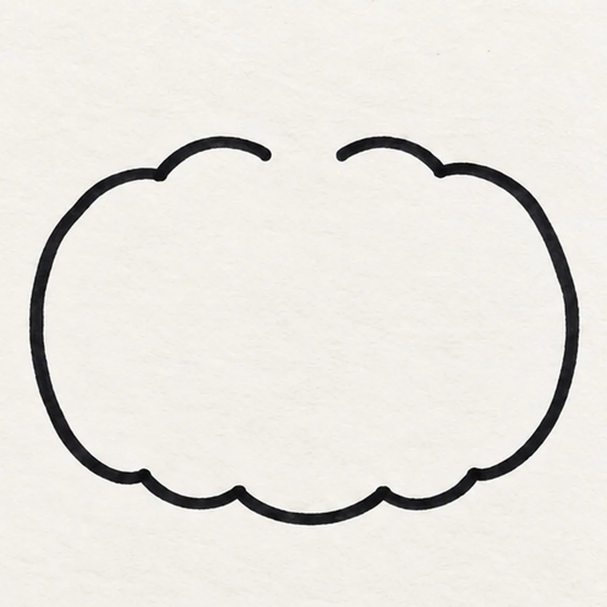
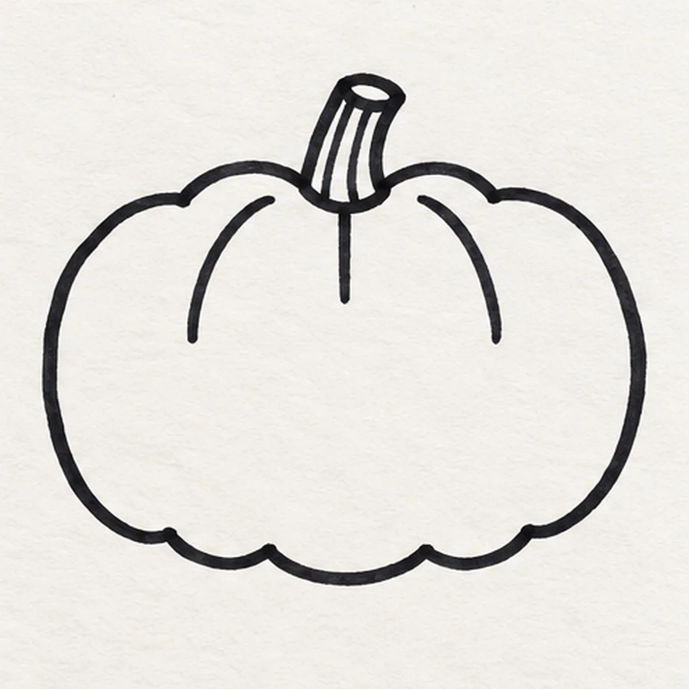
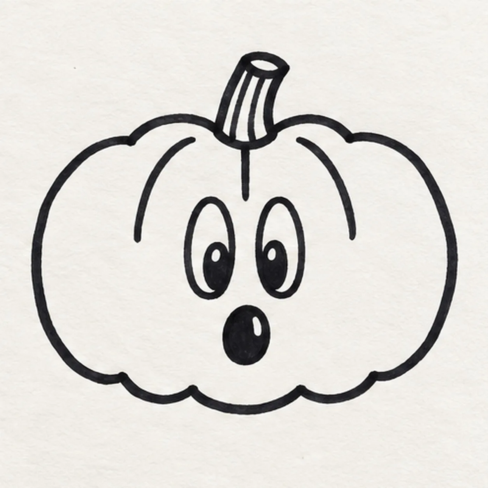
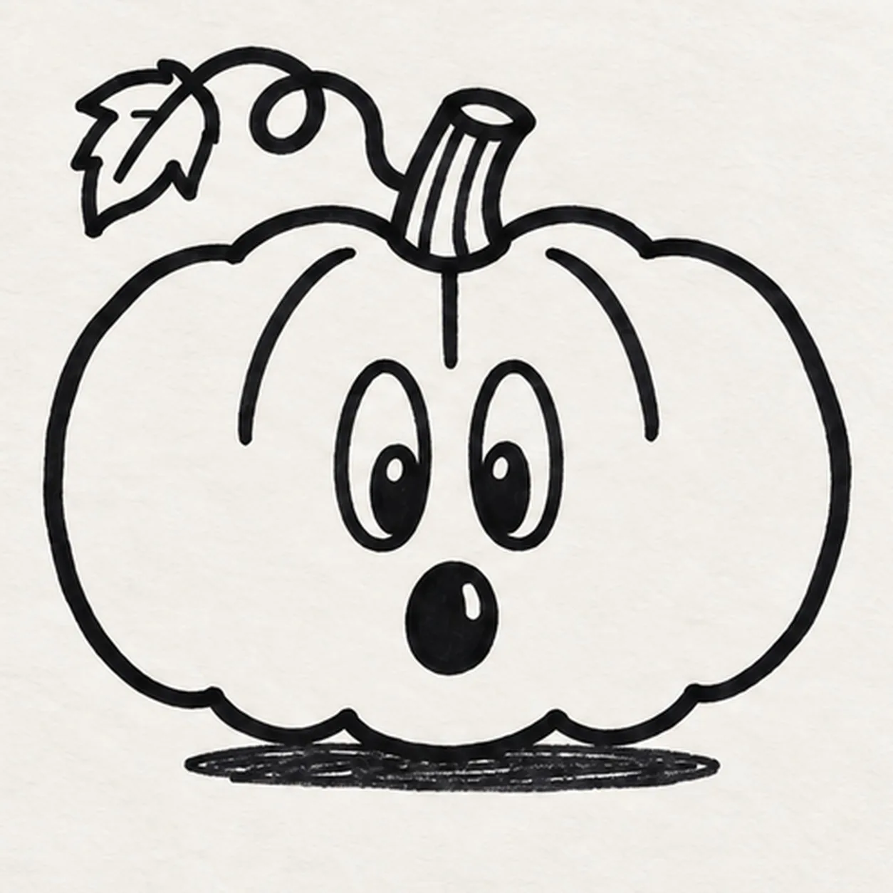

Marker ready?
Let's draw a surprised pumpkin
Treat this as one playful practice round: sketch the idea loosely, simplify the shapes, then commit with confident marker outlines and bright fills.
-
01

Draw the pumpkin body
With a black felt-tip marker, start at the top left of a small stem gap. Curve around a wide squat pumpkin in five gentle lobes, then return to the other side of that top gap; keep the middle open for the face.
Marker tip: Keep the pumpkin wider than it is tall. Leave a clean top gap so the stem can join two visible contour ends in Step 2.
-
02

Set the stem and ribs
Fit a short thick stem into the top gap. From its base, draw one curved rib toward each lower side and one short center rib that stops above the empty face area.
Marker tip: The center rib stops early to protect the face area. Let both side ribs bend with the round form rather than drawing straight stripes.
-
03

Make the surprised face
Place one tall rounded eye on each side of the short center rib, leaving them the same height. Ink one pupil inside each eye, reserving a small white dot. Below them, draw and fill one round surprised mouth with a small paper shine, clear of the side ribs.
Marker tip: Put the pupils slightly inward for a lively expression. Leave one tiny white paper dot in each pupil and the mouth before filling.
-
04

Curl the vine and ground it
From the stem's left side, sweep one vine outward and curl its tip. Attach one small pointed leaf along that vine, then draw a short broken oval shadow beneath the already finished pumpkin outline.
Marker tip: Start the vine at the stem, then make one loose curl. Its single leaf should attach to the vine rather than float beside it.
-
05

Color the pumpkin
Let the ink dry, then fill the existing pumpkin lobes with streaky orange marker and the stem, vine, and leaf with green. Keep both dark pupils, the dark mouth, their small white shines, and two paper streaks on the outer lobes clear; add no new outlines.
Marker tip: Overlap orange strokes lightly so the paper texture remains visible. The two white outer-lobe streaks are reserved paper, not added paint.